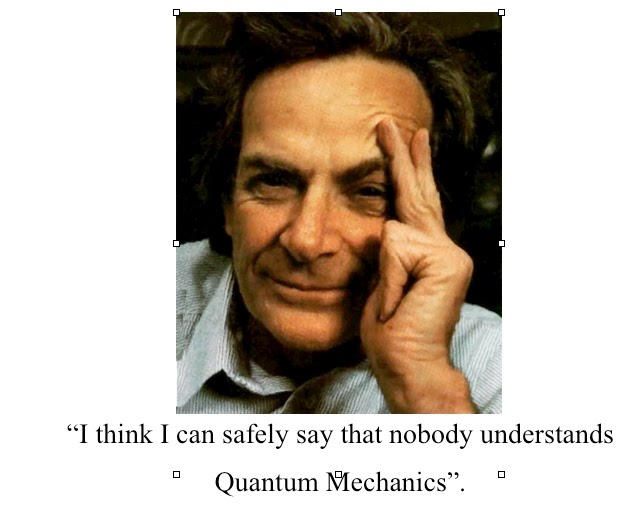
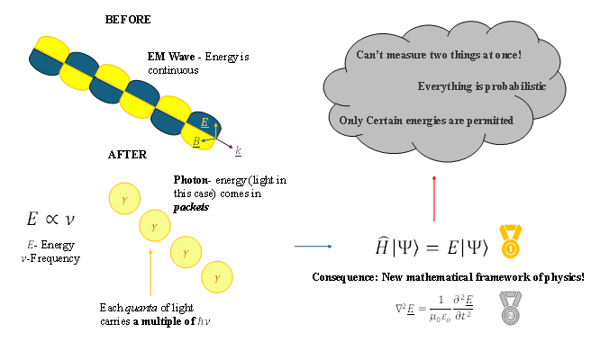
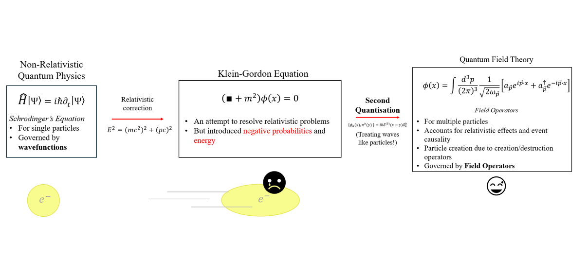
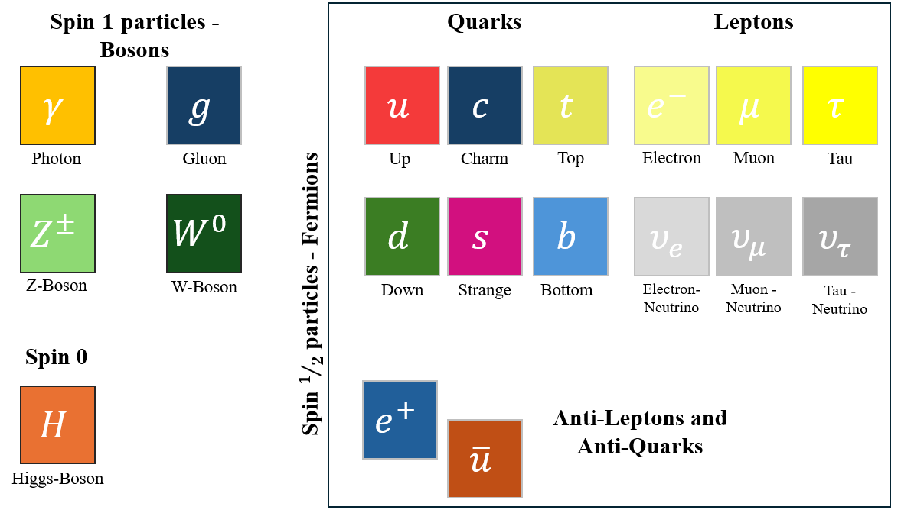

The invention of Ibupro-spin: the misuse of quantum physics in alternative medicine
Since the growing development of the field of quantum physics, a multitude of “medical professionals” and self-help gurus have jumped onboard, proclaiming the secret quantum world that we must tap into in order that we may become prosperous and free from disease. Yet, their claims are riddled with pseudoscience and ignorance of the actual field.
This article aims to discuss the issue, and offer some explanations to what quantum physics really is, so that you, the reader, may better realise the errors of quantum quackery,
The invention of Ibupro-spin: the misuse of quantum physics in alternative medicine
Quantum Physics is something that is not that accessible to most of the public for many reasons. Here, however, we hope to clarify particular concepts in the form of analogies.
To be quite frank, many concepts are abused. Though we intend to cover the few that tend to be abused a lot, lest we make this article into its own textbook: Origin of Quantum Physics, Energy and Quantum Fields.
De-mystifying Quantum Physics
Quantum Physics is something that is not that accessible to most of the public for many reasons. Here, however, we hope to clarify particular concepts in the form of analogies.
To be quite frank, many concepts are abused. Though we intend to cover the few that tend to be abused a lot, lest we make this article into its own textbook: Origin of Quantum Physics, Energy and Quantum Fields.
Though, be warned, we cannot promise triviality with these, even using silly analogues- perhaps it is hard to intellectually assent to something that vastly goes-against everyday experience.
But based on what Richard Feynman once famously said, the best thing you can do is to Shut up and calculate- you kind of have to just take it at face value.

Where does Quantum Physics come from?

Fig 1—The evolution from classical to quantum physics
Quantum Physics as a framework arose after existing classical theories, like Maxwell’s equations, could not explain things at very small sizes like the emission of light from heated metals, or the properties of crystals.
However, several paradigmatic shifts, like that of Max Planck, involved treating energy like discrete energy packets (quanta), ended up resolving it.
Specifically, he said that the frequency of a photon (light as particles) is proportional to its energy.
Hydrogen Quantum States & Measurement
The electron exists in a superposition of quantum states:
|ψ⟩ = a|1s⟩ + b|2p⟩
The resulting consequence would lay the foundation of quantum mechanics. This includes things like the uncertainty principle and the wavefunction, which arose out of the assumptions just mentioned, and were subsequently confirmed in laboratory environments.
Misuse of Quantum Energy and Superposition
In healing Crystals: The vibration thus frequency of a Crystal can help 'remove the negative energy' from yourself; also tends to use ideas like spin or magnetism.
Gazzola, Enrico. “Quantum Physics and the Modern Trends in Pseudoscience.”
Medical Misinformation and Social Harm in Non-Science Based Health Practices,
edited by Anita Lavorgna and Anna Di Ronco, 1st ed., Routledge, 2020, pp. 85–99.
Quantum Fields
Now Quantum fields, they are not some secret energy fountains we can tap into, they are just very, complicated…
They form the backbone of a framework called Quantum Field Theory (QFT), which emerged in the early to mid-20th Century when physics was trying to investigate quantum phenomena at high energies and velocities.
Firstly, the entire crux of QFT is that like many physical theories, it is a plainly abstract concept which makes novel predictions that have been wildly successful like the Higgs Boson
Fields themselves are not literal and tangible. Rather we can measure the consequences of the theory, like detecting the scattering event of an electron- not the electromagnetic field itself!
In standard Quantum mechanics, the wavefunction is the ‘principle object’ that solves the Schrodinger Equation- like how we agree a sine/cosine wave can describe a swinging pendula, it describes how a quantum system behaves.

3D Quantum Field Visualisation
Each point in space contains a quantum field. Particles are localized energy packets (wave excitations).
Energy Levels
Instead fields are incorporated in the quantum framework, and instead are operators which work on something called the Fock Space which is a special mathematical set which contains “nice” functions which represent various quantum states. And what comes out, is that disturbances in these fields, manifest as real particles.

But some particles would naturally arise out of this framework, never having been seen before in experimental settings. For example, the negative energy solutions found by Dirac, predicted the notion of Anti-Electrons or Positrons.
Misuse of Quantum Fields
Law of Attraction: particular variants of this self-help idea use quantum fields as justification. They proclaim that one can change their futures and destinies by manipulating it.
Emotional wellbeing: they claim that your bad temper or sorrow is due to not being in tune with the quantum field which permeates throught the universe, like it is some tangible and material object.
[1] Gazzola, Enrico. “Quantum Physics and the Modern Trends in Pseudoscience.” Medical Misinformation and Social Harm in Non-Science Based Health Practices, edited by Anita Lavorgna and Anna Di Ronco, 1st ed., Routledge, 2020, pp. 85–99.
Conclusion
To conclude, despite the quirkiness of quantum physics, and as mystical as it sounds, the truth is, it’s just math that happens to make very good predictions based on well-constructed mathematical and philosophical arguments. Buy and large, there are no quantum fields to harness, nor negative energy to expel. The large brunt of any physics is pretty much like this: the truth of physical nature is always true regardless as apples always fall from trees, even if Newton was wrong and Einstein was right with General Relativity– in fact, even if his theory is not complete at explaining what happens inside of black holes. The mathematics in physics is likened to Platonic Ideals: it does not say exactly what the light is, but it is like its reflection on the walls of the cave or the river. Matter is always matter, but once it was Democritus cutting cheese and calling them atomos (atoms), right now it is Quantum Physics that explained what happens inside them. <\p>